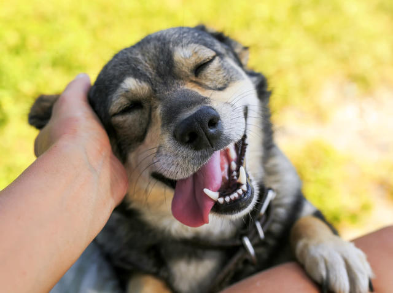

1. Información sobre los perros:
|  | 
|

|
|
1.1Alimentación: La alimentación de los perros es diferente para cada etapa de la vida de estos animales. Por eso, el alimento para perros y otras comidas industriales vienen formulados de acuerdo con la etapa de vida debido a los requerimientos nutricionales particulares. Hay dos tipos de comidas para perros: comida para cachorros y comida para perros adultos. Los demás tipos de comidas según etapas de vida del perro son una respuesta de los fabricantes frente a las demandas de los consumidores. |
Desde el momento en que los cachorros se destetan hasta que el perro se hace adulto, el crecimiento es muy rápido y las actividades físicas muy intensas y frecuentes, por lo que el cachorro necesita un alimento rico en proteínas y grasa.ñ que dependerá de las condiciones particulares de cada cachorro, el ambiente en que vive y la cantidad de actividad que realiza. Sin embargo, esta etapa suele ser muy dinámica para todos los cachorros, además de ser la etapa en la que el perro aumenta su masa y volumen. |
Los perros adultos tienen un menor requerimiento de calorías por kilogramos que los cachorros. Es decir que no necesitan alimentos tan ricos en proteínas y grasas, sino que requieren alimentos un poco menos energéticos; a esta etapa se le conoce como de mantenimiento. Por supuesto, los perros de caza, los de trabajo, los que hacen deportes caninos intensos y todos los perros que hacen actividades físicas intensas o prolongadas, requieren alimentos que les aporten más calorías que los perros mascota. En este caso, tienes que conseguir un alimento más calórico para que tu perro reciba la energía necesaria sin tener que comer mucho más. |
Los perros mayores o ancianos necesitan dietas adecuadas a sus menores niveles de actividad y que no tengan excesiva cantidad de proteínas para no dañar sus riñones. Las fórmulas para estos perros suelen indicarse con la palabra "Senior" en el nombre y suelen (o deberían) tener ingredientes de más fácil digestión. Los perros de edad avanzada se verán beneficiados de recibir complementos nutricionales o vitaminas para perros ancianos.
Otro caso especial es la alimentación de las perras durante la gestación y la lactancia que deben consumir alimentos ricos en calcio para evitar desgaste en su estructura ósea, , en las últimas dos o tres semanas de gestación los requerimientos energéticos de la perra suben mucho y necesita un alimento con muchas más calorías metabolizables y alto porcentaje de proteína.
1.2 Cuidados
Mantén agua fresca siempre a su alcance, no dejes que tu mascota tome agua de cualquier sitio, en especial contaminada. Cuida su alimentación dividiendo la porción recomendada en partes iguales, en los tiempos establecidos e acuerdo a tu rutina, sea que coma 2 o tres veces al día la porción diaria debe ser la recomendada para evitar desnutrición o sobrepeso que derivan en otros padecimientos. También evita alimentos que les hagan daño, los perros son golosos y antojadizos pero cierta comida humana les puede hacer mucho daño, evita en especial darles azúcares, chocolate, picante y exceso de harinas.
Los perros encadenados pueden sufrir de jalones y lesiones en su piel por el collar y en su cuerpo por el contacto con el piso, exposición a la lluvia, el sol, frío y el calor, parásitos y enfermedades ya que son forzados a comer, dormir, orinar y defecar en el mismo lugar; también pueden desarrollar estrés y ansiedad. Designa un espacio específico donde puedan comer y otro para dormir así evitarás desastres y tu perro tendrá una buena conducta dentro de los lugares designados para cada actividad.
También es importante desarrollar la socialización con otros de su especie, algo importante para estos animales que son sociales por naturaleza, esto también ayudará a que el perro no desarrolle conductas agresivas hacia su especie u otras.
Un perro sociable no se da mágicamente, hay que enseñarle a desarrollar esta conducta, ya sea que le enseñes por medios propios o lo lleves a un lugar especializado hay que asegurar una buena educación en nuestras mascotas.